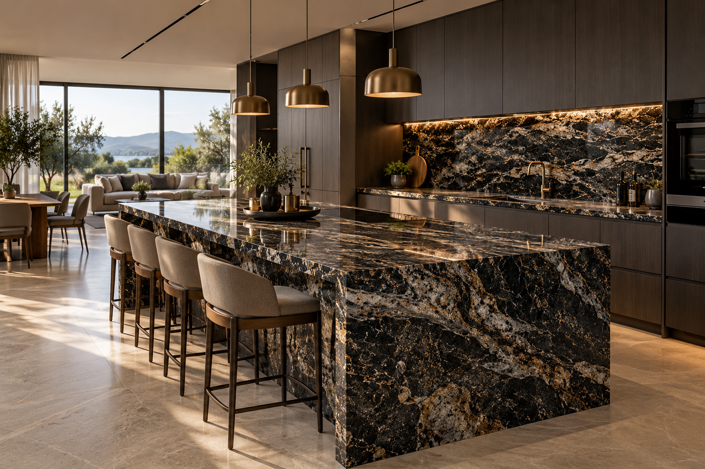

BEKAMAR · BLOG
Taşın
Hikâyesi.
Doğal taş dünyasına dair ilham veren içerikler, uzman görüşleri ve projeler.
Aramanızla eşleşen bir yazı bulunamadı. Başka bir kelime deneyin.
20 YAZI BEKAMAR BLOG
BEKAMAR BLOG
Taşla başlayan
iyi fikirler.
Projeniz için doğru yüzeyi ve çözümü birlikte değerlendirelim.
BİZE ULAŞIN